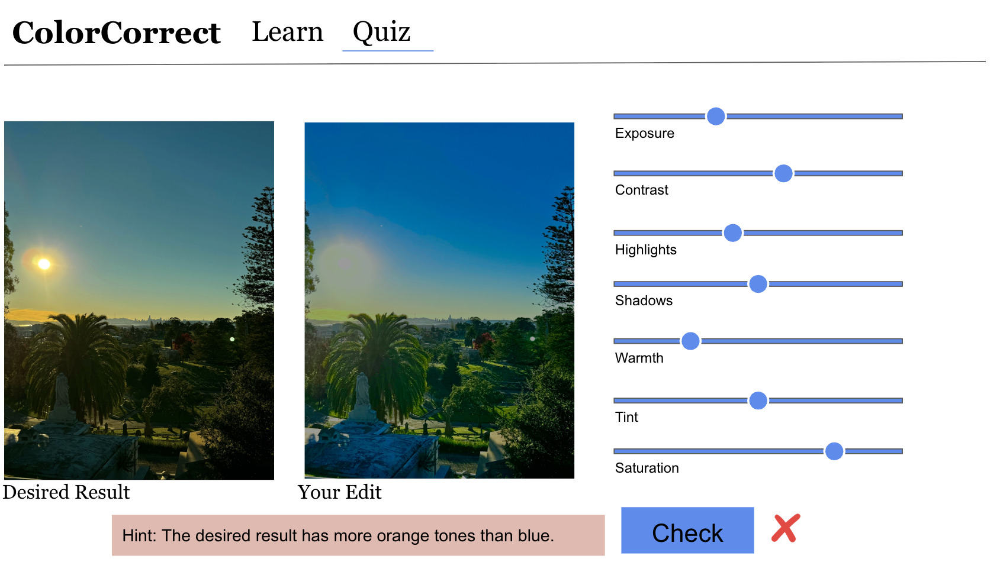
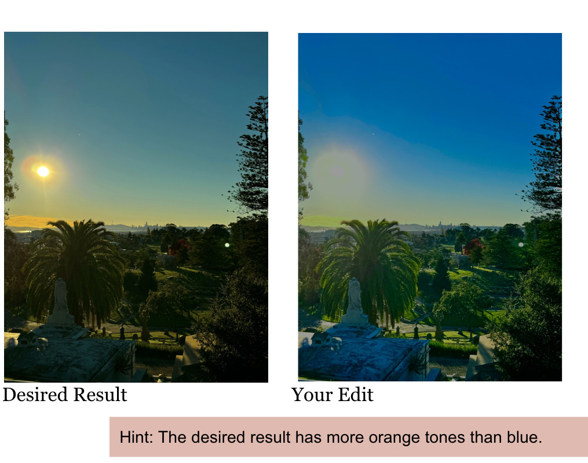

Color Correct
A web app that teaches photo editing by letting you move the sliders. Seven lessons, then a practical exercise where the app scores your edit against a target and tells you which adjustment to fix next.
- Type
- Self-directed project
- Role
- Solo. Curriculum, interface, image processing, scoring
- Stack
- Flask · JavaScript · Canvas · Render
- Content
- 8 lessons, 7 adjustment tools, 4 assessment questions

- Question
- How do you teach a skill where the right answer is a judgement call rather than a fixed value?
- Approach
- Seven single-tool lessons with live sliders, a workflow lesson on ordering them, then a practical exercise scored on distance from a target.
- Result
- Scoring by per-tool tolerance instead of exact match. Feedback names the weakest adjustment and which way to move it.
Premise
Photo editing software hands you a panel of sliders and no explanation of what any of them do or what order to use them in.
Most tutorials solve this by walking through one photograph. You watch someone else make decisions, and the reasoning stays with them. I wanted the opposite arrangement, where the learner moves the slider and watches the image respond before any instruction arrives.
The app teaches seven adjustments one at a time, then the order to apply them in, then asks the learner to reproduce a target edit from scratch.
Seven tools, then the order
Each lesson isolates a single tool. Exposure moves overall brightness. Highlights and shadows target the bright and dark ends separately. Contrast widens the distance between them. Warmth and tint fix color casts on two axes, blue to yellow and green to magenta. Saturation scales color intensity. Adjustments run as per-pixel operations on a canvas, so the image updates as the slider moves.
An eighth lesson covers the part tutorials usually skip, which is sequence. The tools interact, so the order they are applied in changes the result. Adding contrast changes how the shadows read, which is why the last stage is going back through the earlier ones.
Exposure
Set overall brightness first. Every later adjustment is measured against it.
Highlights & shadows
Recover the two ends. Pull back blown-out brights, lift detail out of the dark.
Contrast
Separate the ends once they both hold detail.
Warmth, tint, saturation
Color last, because it reads differently once the tonal range is settled.
Review
Return to the earlier tools. The adjustments interact, so one pass is never enough.
Scoring an edit with no single right answer
A multiple choice question has one correct option. An edit does not. Two people matching the same target will land on different slider values and both results can be right. Marking the exercise on exact values would fail edits that look correct.
So the practical exercise scores each of the seven tools separately, as distance from a target value divided by a tolerance set for that tool. Warmth and exposure get the widest tolerances because they are the most forgiving to the eye. The edit passes when the average score clears a threshold, which lets a learner be slightly off on several tools and still be judged correct.
Feedback comes in two tiers. The first is written into the question and describes the goal in perceptual terms. The second is computed: the app takes the lowest-scoring of the seven adjustments and returns one sentence about that adjustment alone.
- Tier 01 · authored
- “The desired result has more orange tones than blue.” Describes what to look for.
- Tier 02 · computed
- “The image is too cool. Try increasing the warmth.” Names the weakest tool and a direction.
- Never returned
- The target value, the size of the gap, and the other six scores. Giving a number turns the exercise into data entry.

Outcome
Tolerances are a teaching decision
How strict the scoring is determines whether the app reads as a tutor or an examiner. Widening the tolerances during testing changed the feel of the whole exercise.
Withholding is a design choice
The app has every number needed to correct the edit outright. Returning one direction instead is what keeps the learner doing the work.
Sequence is the real lesson
Learners can know what each slider does and still produce poor edits. The ordering lesson turned out to carry more weight than any single tool.
Color Correct is where I first built a system that points a learner toward a next step without making the decision for them. The same question came back at larger scale in Flowcode, where an AI assistant had to suggest a direction without taking authorship of the project.